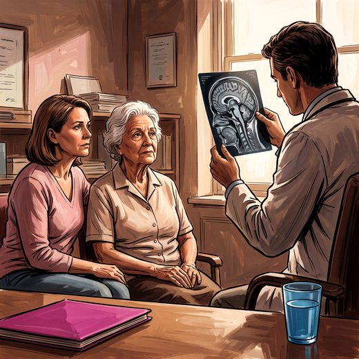

Consulta rápida à beira do leito
Condutas, doses e interações.
Referências da aula · 7
- Skrobot OA, Black SE, Chen C, et al. Progress toward standardized diagnosis of vascular cognitive impairment: guidelines from the Vascular Impairment of Cognition Classification Consensus Study. Alzheimers Dement. 2018;14(3):280-92. PMID 29055812.PubMed
- McKeith IG, Boeve BF, Dickson DW, et al. Diagnosis and management of dementia with Lewy bodies: fourth consensus report of the DLB Consortium. Neurology. 2017;89(1):88-100. PMID 28592453. doi:10.1212/WNL.0000000000004058.PubMedDOI
- Rascovsky K, Hodges JR, Knopman D, et al. Sensitivity of revised diagnostic criteria for the behavioural variant of frontotemporal dementia. Brain. 2011;134(Pt 9):2456-77. PMID 21810890. doi:10.1093/brain/awr179.PubMedDOI
- Nakajima M, Yamada S, Miyajima M, et al. Guidelines for management of idiopathic normal pressure hydrocephalus (third edition). Neurol Med Chir (Tokyo). 2021;61(2):63-97. PMID 33455998. doi:10.2176/nmc.st.2020-0292.PubMedDOI
- Livingston G, Huntley J, Liu KY, et al. Dementia prevention, intervention, and care: 2024 report of the Lancet standing Commission. Lancet. 2024;404(10452):572-628. PMID 39096926.PubMed
- Lin FR, Pike JR, Albert MS, et al. Hearing intervention versus health education control to reduce cognitive decline in older adults with hearing loss in the USA (ACHIEVE). Lancet. 2023;402(10404):786-97. PMID 37478886. doi:10.1016/S0140-6736(23)01406-X.PubMedDOI
- Serrano-Pozo A, Escott-Price V, Grinberg LT, et al. Alzheimer’s disease. Lancet. 2026;407:2241-62. PMID 42208565.PubMed
Documentos oficiais
Leis e publicações do Ministério da Saúde sobre o cuidado da pessoa idosa, de acesso livre.
Abrir os documentos